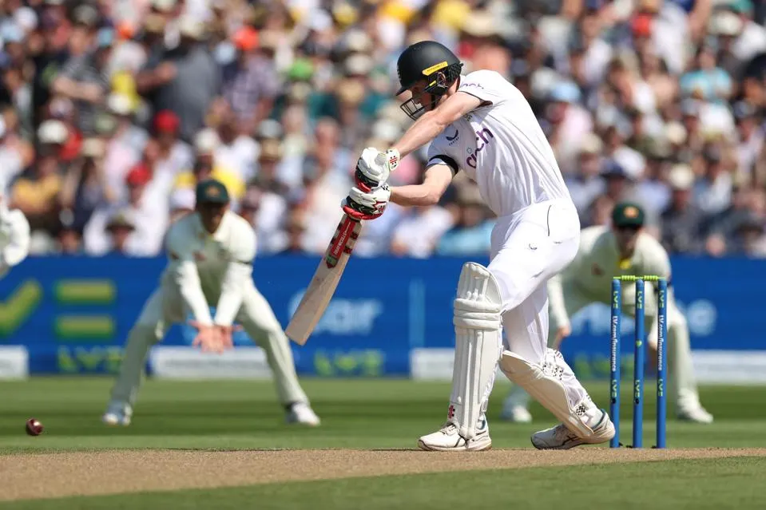
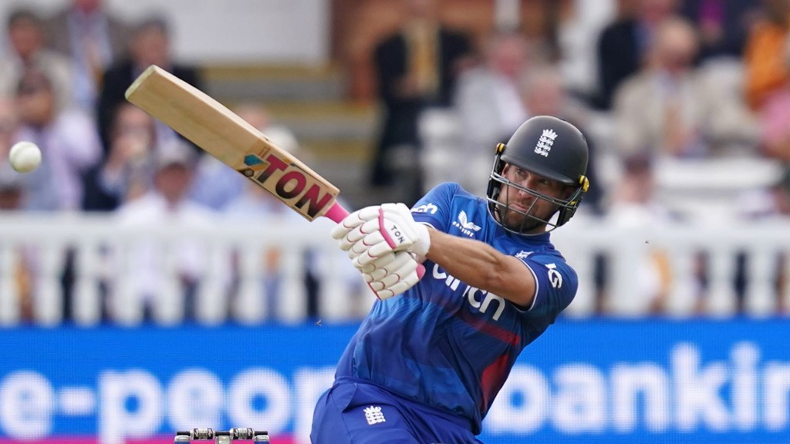

CRICKET
ABOUT CRICKET
A game played with a ball and bat by two sides of usually 11 players each on a large field centering upon two wickets each defended by a batsman
HISTORY OF CRICKET
The sport of
cricket has a known history beginning in the late 16th century England. It became an established sport in the country in the 18th century and developed globally in the 19th and 20th centuries. International matches have been played since the 19th-century and formal Test cricket matches are considered to date from 1877. Cricket is the world's second most popular spectator sport after association football (soccer).
Internationally, cricket is governed by the International Cricket Council (ICC), which has over one hundred countries and territories in membership although only twelve currently play Test cricket.
TYPES OF FORMAT IN CRICKET
- TEST FORMAT
- ODI FORMAT
- T20 FORMAT
TEST FORAMT

Test cricket is a form of first-class cricket played at international level between teams representing full member countries of the International Cricket Council (ICC). A match consists of four innings (two per team) and is scheduled to last for up to five days. In the past, some Test matches had no time limit and were called Timeless Tests. The term "test match" was originally coined in 1861–62 but in a different context.
Test cricket did not become an officially recognised format until the 1890s, but many international matches since 1877 have been retrospectively awarded Test status. The first such match took place at the Melbourne Cricket Ground (MCG) in March 1877 between teams which were then known as a Combined Australian XI and James Lillywhite's XI, the latter a team of visiting English professionals. Matches between Australia and England were first called "test matches" in 1892. The first definitive list of retrospective Tests was written by South Australian journalist Clarence P. Moody two years later and, by the end of the century, had gained acceptance.
There are now twelve full ICC member countries playing Test cricket. Day/night Tests were permitted by the ICC in 2012 and the first day/night match was between Australia and New Zealand at the Adelaide Oval in November 2015.
ODI FORMAT

A One Day International (ODI) is a form of limited overs cricket, played between two teams with international status, in which each team faces a fixed number of overs, currently 50, with the game lasting up to 7 hours.[1][2] The Cricket World Cup, generally held every four years, is played in this format. One Day International matches are also called Limited Overs Internationals (LOI), although this generic term may also refer to Twenty20 International matches. They are major matches and considered the highest standard of List A, limited-overs competition.
The international one-day game is a late-twentieth-century development. The first ODI was played on 5 January 1971 between Australia and England at the Melbourne Cricket Ground.[3] When the first three days of the third Test were washed out officials decided to abandon the match and, instead, play a one-off one day game consisting of 40 eight-ball overs per side. Australia won the game by 5 wickets. ODIs were played in white-coloured kits with a red-coloured ball.
T 20 format

Twenty20 (T20) is a shortened game format of cricket. At the professional level, it was introduced by the England and Wales Cricket Board (ECB) in 2003 for the inter-county competition.[1] In a Twenty20 game, the two teams have a single innings each, which is restricted to a maximum of twenty overs. Together with first-class and List A cricket, Twenty20 is one of the three current forms of cricket recognised by the International Cricket Council (ICC) as being at the highest international or domestic level.A typical Twenty20 game is completed in about two and a half hours, with each innings lasting around 70 minutes and an official 10-minute break between the innings. This is much shorter than previous forms of the game, and is closer to the timespan of other popular team sports. It was introduced to create a fast-paced game that would be attractive to spectators at the ground and viewers on television.
The game has succeeded in spreading around the cricket world. On most international tours there is at least one Twenty20 match and all Test-playing nations have a domestic cup competition.
WHATS YOUR FAVOURITE FORMAT
TYPES OF CHAMPIONSHIPS IN CRICKET that ICC HOSTS
- TEST FORMAT
- ODI FORMAT
- T20 FORMAT